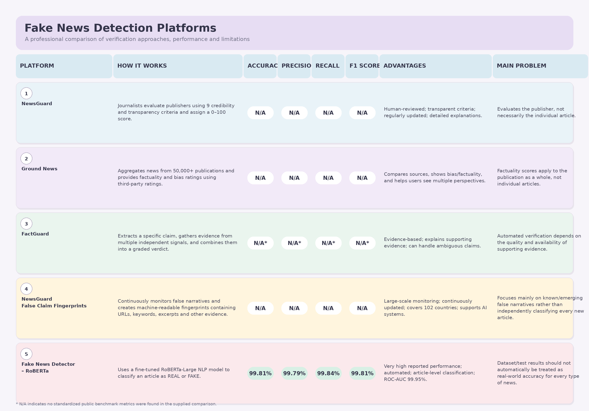

Know What's Real.
Detect What's Fake.
EchoCheck uses state-of-the-art Natural Language Processing and calibrated machine learning models to analyze the lexical syntax, stylistic hallmarks, and authenticity of news articles in seconds.

How EchoCheck Detects Fabricated Content
Our multi-stage natural language processing pipeline extracts linguistic nuances and statistical patterns that differentiate credible journalism from manipulative disinformation.
Article Ingestion & Cleaning
Raw article text is ingested, stripped of wire tags (such as Reuters or AP datelines to prevent bias), normalized to lowercase, and cleansed of HTML fragments and noisy symbols.
Regex Filtering • Dateline StrippingTF-IDF N-Gram Vectorization
The cleaned text is transformed into a high-dimensional mathematical vector using 15,000 unigram and bigram TF-IDF weights, capturing both individual vocabulary and paired phrase patterns.
Sublinear TF • 15,000 N-Gram VocabularyCalibrated Supervised Classification
A trained Support Vector Classifier with Platt probability calibration evaluates the feature vector to generate an uncorrupted, real-world probability confidence percentage for REAL or FAKE.
CalibratedClassifierCV • LinearSVC • 99.21% Test F1Designed for Academic Precision & Speed
Built with enterprise-grade modularity, transparent explanations, and persistent history logging.
AI-Powered NLP Analysis
Deep lexical evaluation using unigram and bigram term weighting trained on thousands of confirmed factual and fabricated news reports.
Instant Real-Time Predictions
Asynchronous fetch architecture with sub-30 millisecond inference allows readers and fact-checkers to evaluate articles on demand.
Calibrated Confidence Scores
Probabilities are rigorously calibrated through cross-validation rather than hardcoded thresholds, providing trustworthy uncertainty quantification.
Linguistic Signal Detection
Detects manipulative stylistic indicators such as excessive capitalization, sensationalist punctuation, and emotional sentence structures.
Persistent Prediction History
SQLite database records every analyzed story, allowing users to revisit past scans, compare score distributions, and export data.
Academic Transparency
Developed for university demonstration with complete mathematical transparency, open dataset references, and empirical confusion matrices.